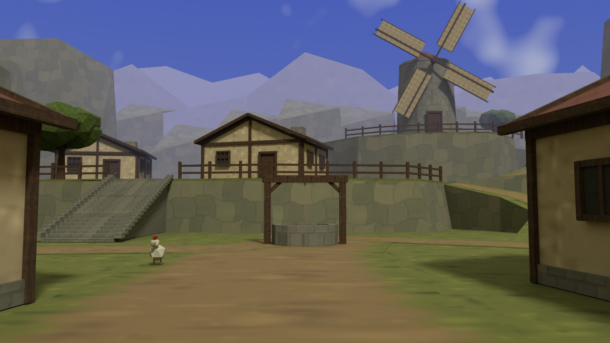
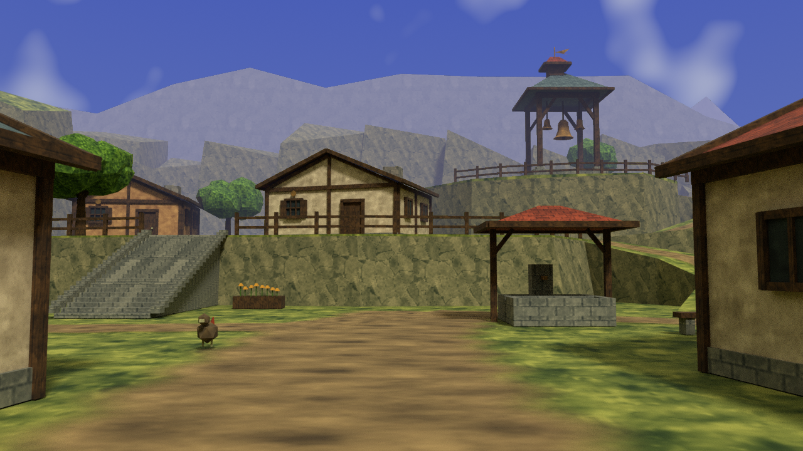
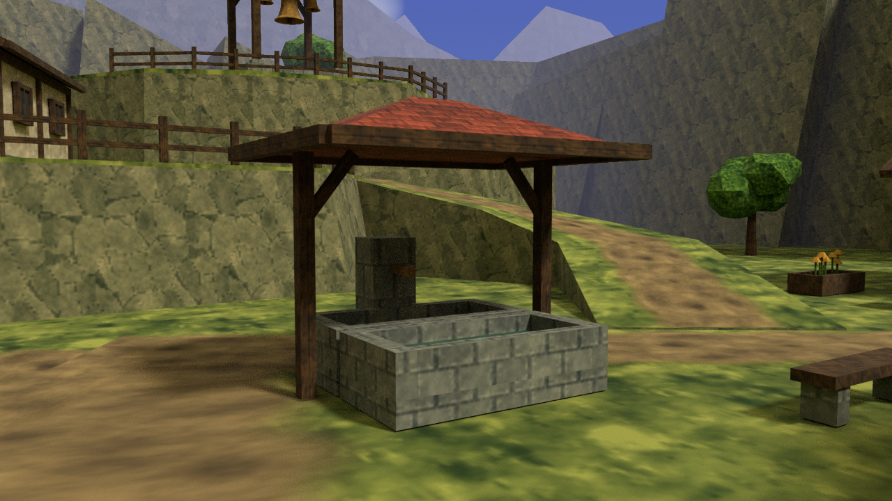
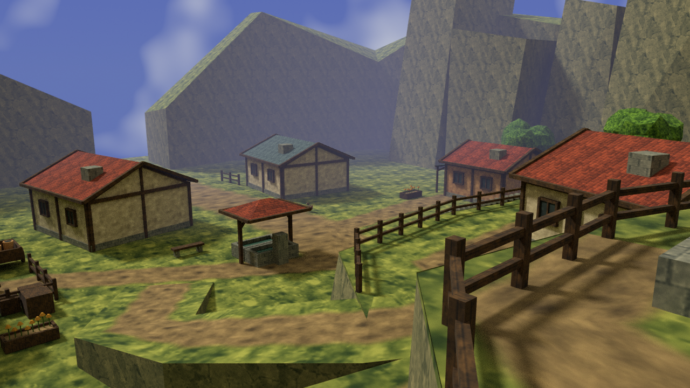

Mossbell — matched entrance views
Actual Blender renders of the old and rebuilt 3D environments. Both use an eye height of 1.65 m, a 28 mm lens on a 36 mm sensor, a 16:9 frame, and the same camera position and direction. These are not Unity or Quest screenshots.

Before — source from commit 2f5ed01.
After — current editable Blender source and exported geometry.
For an actual Unity comparison, play Assets/Scenes/Meadow.unity, press F8, then choose Wizzard → Capture village comparison. F8 again restores desktop movement. Review mode is disabled while an XR headset is active.

Spring and terrace detail.
Upper terrace looking back toward the square.
Asset handoff, measurements, validation and remaining differences